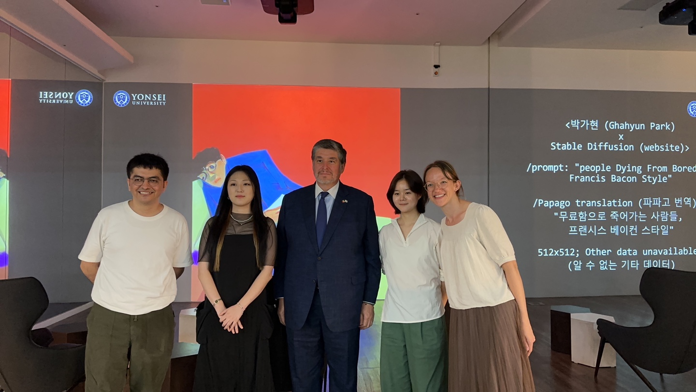

Eric Dolores
Media kit
Art beyond humanity: AI x Human collaborations.
An exhibition of artwork made by humans and AI software. Themed around human bodies and health, the project helps to explore our hopes and fears related to machine learning technologies. Exhibition at Yonsei University's library: 9:13-9:27. First floor, Y-Scape.Coordinators: Melanie Wilmink , Justus Harris y Eric Dolores Cuenca.
Tech team:
- Sardor ABDIRAYIMOV (Bachelor of Science in AI & Big Data at Woosong University, Daejeon)
- Lakshmi NARAYANA (Big Data engineer, Samsung)
Meet the artists: 9:26 from 14:00 to 16:00 at 1F Y-Valley
- Youjung CHOI / 최유정 (Masters Student in Media Art with the Graduate School of Communication & Arts at Yonsei University)
- Jina JUNG / 정진아 (Masters Student in Media Art with the Graduate School of Communication & Arts at Yonsei University)
- Jinyoung JUNG / 정진영 (Masters Student in Media Art with the Graduate School of Communication & Arts at Yonsei University
- Ghahyun PARK / 박가현 (Masters Student in Media Art with the Graduate School of Communication & Arts at Yonsei University)
- Gayoung YUN / 윤가영 (Undergraduate Student in the School of Management at Yonsei University)
Machine collaborators:
- Stable Diffusion
- DALL.E
- Microsoft Bing (DALL.E)
- Midjourney
- Playground AI (Stable Diffusion)
- Naver Papago
- Google Translate
- CLIP Interrogator (OpenAI CLIP & Salesforce BLIP)
Meet the artist: 9:26 from 14:00 to 16:00 at 1F Y-Valley
Instagram: AIxHumanArtYonsei/.

An exploration of the ways that artists are taking up new AI image generation tools and pushing the boundaries of what can be done with them. Using the starting theme of human bodies and health, filtered through the perspective of machine creation, the exhibition interrogates both the hopes and fears related to machine learning technologies including humanity’s existential crisis. Many of the images are related to representations of non-normative human health conditions: failing vision, the feeling of having diabetes, bodies that require prosthetics like wheelchairs, and even mental struggles like depression. These topics were chosen to test the possibilities and boundaries of representation through the aggregate databases that have trained these algorithms; yet, in addition to the politics of representation, the outputted images also reference issues of copyright, cultural appropriation, corporate control of media, and erasures of context and history.
This project is a unique collaboration between the Graduate School of Communication & Arts and the Faculty of Mathematics and Computation, bringing together researchers across the arts and sciences at various levels in their careers, from Postdoctoral researchers to graduate and undergraduate students.
Meet the artists: 9:26 from 14:00 to 16:00 at 1F Y-Valley
The mexican ambassador Carlos Peñafiel Soto visited the gallery on 2023/9/20

- Promotional text in English, Español, 대한민국
- Official Poster
- Promotional images included at the art exhibition
- Video zip of the art instalation
- Video zip, Images
- Promotion of several events including the art exhibition
- Speech by Eric Dolores Cuenca. If you need the AI generated captions, click on settings, Subtitles, choose your language and then click on CC.
{kind=link}